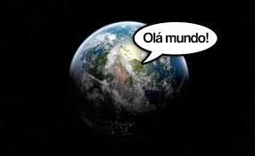

Olá mundo!
Bem vindo ao mundo da web!
Me livrei da maldição...
Olá mundo é um famoso programa de computador que imprimi "Olá mundo!" (ou "hello world!"), usualmente seguindo de uma quebra de linha, com algumas variações como inexistência do ponto de exclamação e letras em minúscula, no dispositivo de saída.
"É utilizado como um teste ou como um exemplo de código de uma linguagem de programação".


Sapo